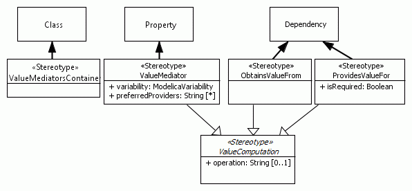

ModelicaML Profile - Full List Of Stereotypes
Profile Version: 0.0.102
Note: In each section the stereotypes are sorted alphabetically.
ModelicaClassConstructs
Stereotype: «Block»
Description: This stereotype is represents the Modelica restricted class "block".
Extends the UML meta-class: Class
Inherits from the stereotype
«ModelicaClassDefinition»
the properties: encapsulated, partial, final, replaceable, iconImagePath
Stereotype: «CalculationModel»
Description: A CalculationModel does not represent a physical system part. When instantiated, it calculates values that are used by other components.
Inherits from the stereotype
«Model»
the properties: encapsulated, partial, final, replaceable, iconImagePath
Stereotype: «Connector»
Description: This stereotype is represents the Modelica restricted class "connector". A "connector" cannot contain equation or algorithm sections, it can have causality and flow specification. All ports must be typed by a "connector" class.
Extends the UML meta-class: Class
Inherits from the stereotype
«ModelicaClassDefinition»
the properties: encapsulated, partial, final, replaceable, iconImagePath
Property: expandable (multiplicity of entries: 1..1), type: Boolean.
Stereotype: «Function»
Description: This stereotype represents the Modelica restricted class "function".
Extends the UML meta-class: FunctionBehavior
Inherits from the stereotype
«ModelicaClassDefinition»
the properties: encapsulated, partial, final, replaceable, iconImagePath
Property: externalLanguageSpecification (multiplicity of entries: 0..1), type: String.
Property: externalFunctionCall (multiplicity of entries: 0..1), type: String.
Property: externalAnnotation (multiplicity of entries: 0..1), type: String.
Property: scope (multiplicity of entries: 0..1), type: ModelicaScope (inner, outer).
Stereotype: «Model»
Description: This stereotype represents the Modelica restricted class "model".
Extends the UML meta-class: Class
Inherits from the stereotype
«ModelicaClassDefinition»
the properties: encapsulated, partial, final, replaceable, iconImagePath
Stereotype: «ModelicaClass»
Description: This stereotype represents the Modelica "class".
Extends the UML meta-class: Class
Inherits from the stereotype
«ModelicaClassDefinition»
the properties: encapsulated, partial, final, replaceable, iconImagePath
Stereotype: «ModelicaClassDefinition» (is abstract)
Description: This stereotype has attributes that are common to all Modelica restricted classes.
Property: encapsulated (multiplicity of entries: 1..1), type: Boolean.
Property: partial (multiplicity of entries: 1..1), type: Boolean.
Property: final (multiplicity of entries: 1..1), type: Boolean.
Property: replaceable (multiplicity of entries: 1..1), type: Boolean.
Property: iconImagePath (multiplicity of entries: 0..1), type: String. Property description: This is the path to the icon image relative to the location of the model file.
Stereotype: «ModelicaEnumeration»
Description:
Extends the UML meta-class: Enumeration
Inherits from the stereotype
«ModelicaClassDefinition»
the properties: encapsulated, partial, final, replaceable, iconImagePath
Stereotype: «ModelicaPackage»
Description: This stereotype represents the Modelica restricted class "package".
Extends the UML meta-class: Class
Inherits from the stereotype
«ModelicaClassDefinition»
the properties: encapsulated, partial, final, replaceable, iconImagePath
Stereotype: «Operator»
Description: This stereotype is represents the Modelica restricted class "operator".
Extends the UML meta-class: Class
Inherits from the stereotype
«ModelicaClassDefinition»
the properties: encapsulated, partial, final, replaceable, iconImagePath
Stereotype: «Record»
Description: This stereotype represents the Modelica restricted class "record".
Extends the UML meta-class: Class
Inherits from the stereotype
«ModelicaClassDefinition»
the properties: encapsulated, partial, final, replaceable, iconImagePath
Stereotype: «Type»
Description: This stereotype is used to represent the Modelica restricted class "type".
Extends the UML meta-class: PrimitiveType
Inherits from the stereotype
«ModelicaClassDefinition»
the properties: encapsulated, partial, final, replaceable, iconImagePath
ModelicaCompositeConstructs
Stereotype: «CalculatedProperty»
Description: A CalculatedProperty does not represent a physical system part. This component provides other components with calculated values.
Inherits from the stereotype
«Component»
the properties: final, modification, arraySize, replaceable, conditionalExpression, iconImagePath
Stereotype: «Component»
Description: This stereotype is used to represent a Modelica component of a composite type.
Extends the UML meta-class: Property
Inherits from the stereotype
«InstanceOfAClass»
the properties: final, modification, arraySize, replaceable, conditionalExpression, iconImagePath
Stereotype: «Connection»
Description: This stereotype is used to represent the Modelica "connection" clause and implies its associated semantics (Kirchhoff's laws).
Extends the UML meta-class: Connector
Property: explicitConnectionEnds (multiplicity of entries: 0..1), type: String. Property description: This property can be used to define the content of a Modelica connect clause.
The keyword "connect" and the parenthesizes are omitted. The string must contain paths to both ports (using the dot-notation) separated by comma.
Example: component1.port1.variable1 , component2.port2.variable2
Stereotype: «ConnectionPort»
Description: This stereotype is used to represent a Modelica class instance of the type "connector".
Extends the UML meta-class: Port
Inherits from the stereotype
«InstanceOfAClass»
the properties: final, modification, arraySize, replaceable, conditionalExpression, iconImagePath
Property: causality (multiplicity of entries: 0..1), type: ModelicaCausality (input, output).
Stereotype: «FunctionArgument»
Description: This stereotype is used to represent Modelica “function” arguments.
Extends the UML meta-class: Parameter
Inherits from the stereotype
«InstanceOfAClass»
the properties: final, modification, arraySize, replaceable, conditionalExpression, iconImagePath
Property: flowFlag (multiplicity of entries: 0..1), type: ModelicaFlowFlag (flow, stream).
Property: scope (multiplicity of entries: 0..1), type: ModelicaScope (inner, outer).
Property: causality (multiplicity of entries: 1..1), type: ModelicaCausality (input, output).
Property: variability (multiplicity of entries: 1..1), type: ModelicaVariability (continuous, discrete, parameter, constant).
Property: declarationEquationOrAssignment (multiplicity of entries: 0..1), type: String. Property description: This refers to the shorthand notation in Modelica. The result must be of the same type as the Modelica component itself. In this case the value is the right-hand-expression of the equation or assignment. The "=" or ":=" sign must be included.
Stereotype: «InstanceOfAClass» (is abstract)
Description: This stereotype has attributes that are common to all Modelica class instances.
Property: final (multiplicity of entries: 1..1), type: Boolean.
Property: modification (multiplicity of entries: 0..*), type: String. Property description: Each entry represents one instance modification of type "instance name = modification expression".
The parenthesis "(" and ")" and the commas are omitted.
Property: arraySize (multiplicity of entries: 0..*), type: String. Property description: Each entry string contains the full specification of the array. For example, "[1,3,:]".
Property: replaceable (multiplicity of entries: 1..1), type: Boolean.
Property: conditionalExpression (multiplicity of entries: 0..1), type: String. Property description: Only if the condition is true then the Modelica component is created; the condition is only evaluated at compilation time and is often used for configuration changes.
The result of expression must be of type Boolean. This string contains the expression. The keyword "if" is omitted.
Property: iconImagePath (multiplicity of entries: 0..1), type: String. Property description: This is the path to the icon image relative to the location of the model file.
If no icon is defined for a property then the icon of the property type is displayed (if defined, else no icon is displayed).
Stereotype: «Variable»
Description: This stereotype is used to represent a Modelica class instance of a primitive type (Real, String, Boolean, Integer) or a sub-type of Modelica restricted class "type".
Extends the UML meta-class: Property
Inherits from the stereotype
«InstanceOfAClass»
the properties: final, modification, arraySize, replaceable, conditionalExpression, iconImagePath
Property: flowFlag (multiplicity of entries: 0..1), type: ModelicaFlowFlag (flow, stream).
Property: scope (multiplicity of entries: 0..1), type: ModelicaScope (inner, outer).
Property: causality (multiplicity of entries: 0..1), type: ModelicaCausality (input, output).
Property: variability (multiplicity of entries: 1..1), type: ModelicaVariability (continuous, discrete, parameter, constant).
Property: declarationEquationOrAssignment (multiplicity of entries: 0..1), type: String. Property description: This refers to the shorthand notation in Modelica. The result must be of the same type as the Modelica component itself. In this case the value is the right-hand-expression of the equation or assignment. The "=" or ":=" sign must be included.
ModelicaBehaviorConstructs
Stereotype: «Algorithm(Code)»
Description: This stereotype is used to represent a set of statements in an algorithm section.
Extends the UML meta-class: OpaqueBehavior
Inherits from the stereotype
«AlgorithmLoopProperties»
the properties: loopKind, forIndices, whileExpression
Property: initial (multiplicity of entries: 1..1), type: Boolean.
Stereotype: «AlgorithmLoopProperties» (is abstract)
Description: This stereotype has properties that are inherited by other stereotypes in order to be able to capture the "for" or a "while" loop with the "for-indices" or "while expression" respectively.
Property: loopKind (multiplicity of entries: 0..1), type: ModelicaAlgorithmLoopKind (for, while).
Property: forIndices (multiplicity of entries: 0..1), type: String.
Property: whileExpression (multiplicity of entries: 0..1), type: String.
Stereotype: «AlgorithmStatements(CodeInDiagram)»
Description: This stereotype is used to represent a set of algorithm statements in a diagram.
Extends the UML meta-class: OpaqueAction
Inherits from the stereotype
«AlgorithmLoopProperties»
the properties: loopKind, forIndices, whileExpression
Stereotype: «Assert»
Description: This stereotype represents the Modelica assert() function.
Extends the UML meta-class: Constraint
Property: condition (multiplicity of entries: 1..1), type: String.
Property: message (multiplicity of entries: 1..1), type: String.
Property: level (multiplicity of entries: 1..1), type: ModelicaAssertionLevel (warning, error).
Stereotype: «ConditionalAlgorithm(Diagram)»
Description: This stereotype is used to represent an algorithm section. An Activity Diagram is used to model the conditional constructs (loop, if, when). Any OpaqueActions, in such an Activity Diagram, must contain Modelica statements in the "body" attribute.
Extends the UML meta-class: Activity
Inherits from the stereotype
«AlgorithmLoopProperties»
the properties: loopKind, forIndices, whileExpression
Property: isSubActivity (multiplicity of entries: 1..1), type: Boolean. Property description: This attribute indicates that this activity is a sub-activity. It is invoked by another activity using CallBehaviorAction.
Property: initial (multiplicity of entries: 1..1), type: Boolean.
Stereotype: «ConditionalEquations(Diagram)»
Description: This stereotype is used to represent an equation section. An Activity Diagram is used to model the conditional constructs (loop, if, when). Any OpaqueActions, in such an Activity Diagram, must contain Modelica equations in the "body" attribute.
Extends the UML meta-class: Activity
Inherits from the stereotype
«EquationsLoopProperties»
the properties: loopKind, forIndices
Property: isSubActivity (multiplicity of entries: 1..1), type: Boolean. Property description: This attribute indicates that this activity is a sub-activity. It is invoked by another activity using CallBehaviorAction.
Property: initial (multiplicity of entries: 1..1), type: Boolean.
Stereotype: «Equations(Code)»
Description: This stereotype is used to represent a set of equations in an equation section.
Extends the UML meta-class: OpaqueBehavior
Inherits from the stereotype
«EquationsLoopProperties»
the properties: loopKind, forIndices
Property: initial (multiplicity of entries: 1..1), type: Boolean.
Stereotype: «Equations(CodeInDiagram)»
Description: This stereotype is used to represent a set of equations in a diagram.
Extends the UML meta-class: OpaqueAction
Inherits from the stereotype
«EquationsLoopProperties»
the properties: loopKind, forIndices
Stereotype: «EquationsLoopProperties» (is abstract)
Description: This stereotype has properties that are inherited by other stereotypes in order to be able to capture the "for" loop with the "for-indices".
Property: loopKind (multiplicity of entries: 0..1), type: ModelicaEquationsLoopKind (for).
Property: forIndices (multiplicity of entries: 0..1), type: String.
Stereotype: «ExecutionOrderPriority»
Description: “ExecutionOrderPriority” specifies the order in which the code of the transition, control flow or region shall be executed relative to the neighbors.
Extends the UML meta-class: Transition, Region, ControlFlow
Property: priority (multiplicity of entries: 1..1), type: Integer. Property description: Execution priority in code. A lower number implies a higher execution priority. Element with the lowest priority is executed first.
Stereotype: «If»
Description: This stereotype is used to represent the Modelica "if" keyword.
Extends the UML meta-class: DecisionNode
Stereotype: «ModelicaMLStateMachine»
Description: This stereotypes indicates that this a special case of the UML StateMachine. It uses a limited sub-set of the UML StateMachine meta-classes and can be translated into executable Modelica code.
Extends the UML meta-class: StateMachine
Property: samplingExpression (multiplicity of entries: 0..1), type: String.
Property: additionalCode (multiplicity of entries: 0..1), type: String. Property description: This property allows including additional code that will be inserted at the beginning of the algorithm section in which the state machine code will be generated.
Property: freezeExpression (multiplicity of entries: 0..1), type: String. Property description: The state machine or the composite state is fozen, i.e., the state is active but no reactions and no actions will be executed inside the state, as long as this expression evaluates to true.
Stereotype: «StateDependency»
Description:
Extends the UML meta-class: ControlFlow, Transition
Property: isInState (multiplicity of entries: 1..*), type: State. Property description: Reference to a state in one of the state machines of the class.
Property: logicalOperator (multiplicity of entries: 1..1), type: LogicalOperators (and, or, not). Property description: The logical operator to be used between the multiple state references.
Stereotype: «StateSpecification»
Description: This stereotype defines additional feature that are not included in UML.
Extends the UML meta-class: State
Property: freezeExpression (multiplicity of entries: 0..1), type: String. Property description: Indicates if the state or state machine should be is active but do not react and do not execution actions as long as the expression evaluates to true.
Stereotype: «StateTransitionSpecification»
Description: This stereotype captures additional features for state transition behavior which are not included in UML.
Extends the UML meta-class: Transition
Property: suppressExitActions (multiplicity of entries: 1..1), type: Boolean. Property description: If set to true then exit actions of the transition source-state and its sub-states are not executed.
Property: suppressEntryActions (multiplicity of entries: 1..1), type: Boolean. Property description: If set to true then entry actions of the transition target-state (not its sub-states) are not executed.
Stereotype: «When»
Description: This stereotype is used to represent the Modelica "when" keyword.
Extends the UML meta-class: DecisionNode
ModelicaRelationsConstructs
Stereotype: «ConstrainedByRelation»
Description: This stereotype represents the Modelica relation “constrainedBy”.
Extends the UML meta-class: Dependency
Property: modification (multiplicity of entries: 0..*), type: String.
Stereotype: «ExtendsRelation»
Description: This stereotype has attributes which allow the capturing of type modifications.
Extends the UML meta-class: Generalization
Property: modification (multiplicity of entries: 0..*), type: String. Property description: Each entry represents a Modelica type modification. Commas and the parenthesis "(" and ")" are omitted.
Stereotype: «Import»
Description: This stereotype represents the Modelica “import” relation.
Extends the UML meta-class: Dependency
Property: alias (multiplicity of entries: 0..1), type: String.
Stereotype: «PartialDerivativeOfFunctionRelation»
Description: This stereotype represents the Modelica the relation from a function (source) that is a derivative of another function (target).
Extends the UML meta-class: Dependency
Property: arguments (multiplicity of entries: 1..*), type: String.
Stereotype: «RedeclareRelation»
Description: This stereotype represents the Modelica “redeclare” relation.
Extends the UML meta-class: Dependency
Property: modification (multiplicity of entries: 0..*), type: String.
Stereotype: «TypeRelation»
Description: This stereotype has properties that allow capturing type modifications. It can only be used between classes of primitive type.
Extends the UML meta-class: Generalization
Property: modification (multiplicity of entries: 0..*), type: String. Property description: Each entry represents a Modelica type modification.
Commas and the parenthesis "(" and ")" are omitted.
Property: arraySize (multiplicity of entries: 0..*), type: String. Property description: Each string contains the full array specification (e.g. "[1,3,:]")
ModelicaRequirementConstructs
Stereotype: «Requirement»
Description: “Requirement” concept, identified by this stereotype, represents a natural language requirements and the corresponding violation monitor.
Extends the UML meta-class: Class
Inherits from the stereotype
«ModelicaClassDefinition»
the properties: encapsulated, partial, final, replaceable, iconImagePath
Property: id (multiplicity of entries: 1..1), type: String. Property description: Requirement unique identifier.
Property: text (multiplicity of entries: 1..1), type: String. Property description: Natural language statement of the requirement.
Property: specifiesType (multiplicity of entries: 0..*), type: ModelicaClassDefinition. Property description: This property implies that all instantiated objects of the referenced types shall fulfill this requirement.
Property: specifiesObject (multiplicity of entries: 0..*), type: String. Property description: This property implies that only the referenced objects shall fulfill this requirement.
Stereotype: «RequirementInstance»
Description: This stereotype indicates that this component is an instantiation of a requirement.
Inherits from the stereotype
«Component»
the properties: final, modification, arraySize, replaceable, conditionalExpression, iconImagePath
Stereotype: «Traceability»
Description: This stereotype can be applied to any model element.
It has properties that can be used for setting up a descriptive traceability between requirements and design artifacts.
Extends the UML meta-class: NamedElement
Property: specifiedByRequirement (multiplicity of entries: 0..*), type: Requirement.
ModelicaSimulationConstructs
Stereotype: «Simulation»
Description: This stereotype contains the properties which are used in the "simulate()" command in Modelica tools.
Extends the UML meta-class: Class
Property: startTime (multiplicity of entries: 0..1), type: String.
Property: stopTime (multiplicity of entries: 0..1), type: String.
Property: numberOfIntervals (multiplicity of entries: 0..1), type: String.
Property: tolerance (multiplicity of entries: 0..1), type: String.
Stereotype: «UserInteractive»
Description: This stereotype is used to indicate that the value of this variable shall be manipulated by the user. Therefore it is necessary to set the variability to "parameter" (this requirement is OMC-specific). Moreover, the modeler can define declaration value for the parameter if necessary.
Extends the UML meta-class: Property
Property: declaration (multiplicity of entries: 0..1), type: String. Property description: Declaration value for the parameter.
ModelicaAnnotationConstructs
Stereotype: «Annotation(CodeGeneration)»
Description: Annotation specific to Modelica code generation (not ModelicaML code generation).
Extends the UML meta-class: Comment
Property: Evaluate (multiplicity of entries: 0..1), type: Boolean.
Property: HideResult (multiplicity of entries: 0..1), type: Boolean.
Property: Inline (multiplicity of entries: 0..1), type: Boolean.
Property: LateInline (multiplicity of entries: 0..1), type: Boolean.
Property: smoothOrder (multiplicity of entries: 0..1), type: Integer.
Stereotype: «Annotation(Documentation)»
Description: See the Modelica specification.
Extends the UML meta-class: Comment
Property: info (multiplicity of entries: 0..1), type: String.
Property: revisions (multiplicity of entries: 0..1), type: String.
Stereotype: «Annotation(Icon)»
Description: Graphical icon annotation (Modelica code).
Extends the UML meta-class: Comment
Property: iconAnnotationString (multiplicity of entries: 0..1), type: String.
Stereotype: «Annotation(SimulationExperiment)»
Description: The experiment annotation defines the default start time, the stop time, and the default relative integration tolerance for simulation experiments to be carried out with the model at hand.
Extends the UML meta-class: Comment
Property: StartTime (multiplicity of entries: 0..1), type: UnlimitedNatural.
Property: StopTime (multiplicity of entries: 0..1), type: UnlimitedNatural.
Property: Tolerance (multiplicity of entries: 0..1), type: UnlimitedNatural.
Stereotype: «Annotation(VersionHandling)»
Description: A top-level package or model can specify the version of top-level classes it uses, its own version number, and if possible how to convert from previous versions. This can be used by a tool to guarantee that consistent versions are used, and if possible to upgrade usage from an earlier version to a current one.
Extends the UML meta-class: Comment
Property: version (multiplicity of entries: 0..*), type: String. Property description: Defines the version number of the model or package. All classes within this top-level class have this version number.
Property: conversion (multiplicity of entries: 0..*), type: String. Property description: The first "(" and the last ")" are omitted.
Property: uses (multiplicity of entries: 1..1), type: String. Property description: The first "(" and the last ")" are omitted.
Stereotype: «Annotation»
Description: Annotations are intended for storing extra information about a model, such as graphics, documentation or versioning, etc. A Modelica tool is free to define and use other annotations, in addition to those defined here, according to section 14.1. of the Modelica specification. The only requirement is that any tool shall save files with all annotations from this chapter and all vendor-specific annotations intact. To ensure this, annotations must be represented with constructs according to the Modelica grammar. The specification in this document defines the semantic meaning if a tool implements any of these annotations.
Extends the UML meta-class: Comment
Property: fullAnnotationString (multiplicity of entries: 0..1), type: String. Property description: This is a qualified annotation string. The first "(" and the last ")" are omitted.
Verification
Stereotype: «DoNotUseToVerify»
Description: This relation indicates that the scenario (source) should not be used to verify the requirement it points to.
Extends the UML meta-class: Dependency
Stereotype: «RequiredFor»
Description: This stereotype is the opposite of the "Requires" relation. The two stereotypes are mutually exclusive and should be used depending on the desired direction of the dependency and the resulting modification of the dependency client.
Inherits from the stereotype
«Requires»
the properties: onlyInCombinationWith, always
Stereotype: «Requires»
Description: This dependency indicates that when the client model is instantiated it requires the target model to be instantiated as well.
Extends the UML meta-class: Dependency
Property: onlyInCombinationWith (multiplicity of entries: 0..*), type: ModelicaClassDefinition. Property description: This property means that the target model shall be instantiated together with the client model only if listed (other) models will be instantiated too.
Property: always (multiplicity of entries: 1..1), type: Boolean. Property description: This property means that the target model shall always be instantiated together with the dependency client model independent if the providers of the target model are used by other components or not.
Stereotype: «UseToVerify»
Description: This relation indicates that the scenario (source) can be used to verify the requirement (target).
Extends the UML meta-class: Dependency
Stereotype: «VerificationModel»
Description: A “Verification Model” is composed of one design that is to be verified against s set of requirements by means of one scenario. Some additional models may need to be included as well.
Extends the UML meta-class: Class
Stereotype: «VerificationScenario»
Description: VerificationScenario is a model that stimulates the design in such a way that requirement violation monitors are evaluated.
Extends the UML meta-class: Class
Inherits from the stereotype
«Simulation»
the properties: startTime, stopTime, numberOfIntervals, tolerance
Property: usedToVerify (multiplicity of entries: 0..*), type: Requirement. Property description: This relation indicates that this test scenario can be used to verify the listed requirements.
ValueBinding

Stereotype: «ObtainsValueFrom»
Description: This relation specifies that the referenced mediator (source) shall be used for inferring binging from the referenced provider (target)
Extends the UML meta-class: Dependency
Inherits from the stereotype
«ValueComputation»
the properties: operation
Stereotype: «ProvidesValueFor»
Description: This relation specifies that the referenced mediator (source) shall be used for inferring binging for the referenced client (target).
Extends the UML meta-class: Dependency
Inherits from the stereotype
«ValueComputation»
the properties: operation
Property: isRequired (multiplicity of entries: 1..1), type: Boolean. Property description: If set to true this property means that it is in mandatory to bind this client even if a default value is specified.
Stereotype: «ValueClient»
Description: A client represents the need for information that shall be provided by an another component.
Extends the UML meta-class: Property
Inherits from the stereotype
«ValueComputation»
the properties: operation
Property: obtainsValueFrom (multiplicity of entries: 0..*), type: ValueMediator.
Stereotype: «ValueComputation» (is abstract)
Description: Clients, mediators and providers can have associated operations.
Property: operation (multiplicity of entries: 0..1), type: String.
Stereotype: «ValueMediator»
Description: A mediator enables bindings code generation for clients.
Extends the UML meta-class: Property
Inherits from the stereotype
«ValueComputation»
the properties: operation
Property: variability (multiplicity of entries: 1..1), type: ModelicaVariability (continuous, discrete, parameter, constant).
Property: preferredProviders (multiplicity of entries: 0..*), type: String.
Stereotype: «ValueMediatorsContainer»
Description: A container that groups mediators.
Extends the UML meta-class: Class
Stereotype: «ValueProvider»
Description: A provider provides values for clients.
Extends the UML meta-class: Property, State
Inherits from the stereotype
«ValueComputation»
the properties: operation
Property: providesValueFor (multiplicity of entries: 0..*), type: ValueMediator.
ModelReferences
Stereotype: «InstalledLibrary»
Description: This stereotype indicates the this element is a library that is available in the ModelicaML environment and can be imported and used.
Extends the UML meta-class: Model
Stereotype: «ModelicaModelProxy»
Description: This stereotype represents an existing Modelica model. It reflects all information of that model that is needed for its usage.
Extends the UML meta-class: Element
Stereotype: «ModelicaModelReference»
Description: This stereotype represents an existing Modelica model that is included as black-box into ModelicaML model.
Extends the UML meta-class: Class
Property: modelPath (multiplicity of entries: 1..1), type: String. Property description: This string is the absolute model path (dot-notation, starting with the top-level package) to the referenced model.
CodeGeneration
Stereotype: «CodeGenerationSpecification»
Description: This stereotype is used for caturing of code generation specific information.
Extends the UML meta-class: Element
Property: excludeFromCG (multiplicity of entries: 1..1), type: Boolean. Property description: This flag indicates that no code shall be generated for this element.
Stereotype: «ExcludeFromCGIfUserInteractive»
Description: This stereotypes is used to indicate that this behavior shall be excluded from the code generation if the referenced variable is set to be user interactive (variability is set to "parameter").
Extends the UML meta-class: StateMachine, OpaqueBehavior, Activity
Property: variableReference (multiplicity of entries: 1..1), type: Variable. Property description: Reference to the variable that is user interactive (must have the stereotype <> applied) and thus does not need the behavior (equations or algorithm) for its calculation.
ModelicaPredefinedTypes
Primitive Type: ModelicaBoolean
Property: quantity (multiplicity of entries: 0..1), type: String.
Property: fixed (multiplicity of entries: 0..1), type: Boolean.
Property: start (multiplicity of entries: 0..1), type: Boolean.
Primitive Type: ModelicaInteger
Property: quantity (multiplicity of entries: 0..1), type: String.
Property: min (multiplicity of entries: 0..1), type: Integer.
Property: max (multiplicity of entries: 0..1), type: Integer.
Property: fixed (multiplicity of entries: 0..1), type: Boolean.
Property: start (multiplicity of entries: 0..1), type: Integer.
Primitive Type: ModelicaReal
Property: quantity (multiplicity of entries: 0..1), type: String.
Property: unit (multiplicity of entries: 0..1), type: String.
Property: displayUnit (multiplicity of entries: 1..1), type: String.
Property: min (multiplicity of entries: 0..1), type: UnlimitedNatural.
Property: max (multiplicity of entries: 0..1), type: UnlimitedNatural.
Property: fixed (multiplicity of entries: 0..1), type: Boolean.
Property: nominal (multiplicity of entries: 0..1), type: UnlimitedNatural.
Property: start (multiplicity of entries: 0..1), type: UnlimitedNatural.
Property: stateSelect (multiplicity of entries: 0..1), type: ModelicaStateSelect (default, never, avoid, prefer, always).
Primitive Type: ModelicaString
Property: quantity (multiplicity of entries: 0..1), type: String.
Property: start (multiplicity of entries: 0..1), type: String.
ModelicaPredefinedEnumerations
Enumeration LogicalOperators (and, or, not)
Enumeration ModelicaAccess (public, protected)
Enumeration ModelicaAlgorithmLoopKind (for, while)
Enumeration ModelicaAssertionLevel (warning, error)
Enumeration ModelicaCausality (input, output)
Enumeration ModelicaEquationsLoopKind (for)
Enumeration ModelicaFlowFlag (flow, stream)
Enumeration ModelicaScope (inner, outer)
Enumeration ModelicaStateSelect (default, never, avoid, prefer, always)
Enumeration ModelicaVariability (continuous, discrete, parameter, constant)